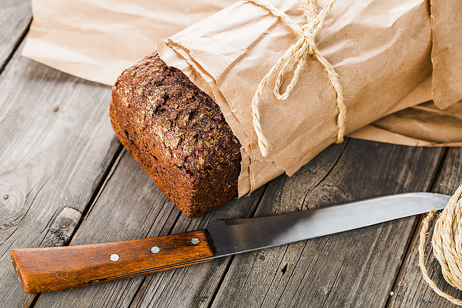

Una Alconbury, July 29, 2015
Quick breads are leavened with baking powder or baking soda, as compared to yeast breads that require long rising times before baking. We compiled a collection of our editors' and readers' best-loved quick bread recipes from biscuits and scones to muffins and loaves. Based on research from MyRecipes.com, we pulled the Cooking Light recipes that received the most votes and highest star ratings.
First up: Mixing orange juice in with the powdered sugar creates an easy-to-drizzle glaze that adds a burst of orange flavor to this loaf. Reviewer miller awarded this recipe 5 stars: "This bread was outstanding. I loved its intense orange flavor with the crunchiness and nuttiness of the pecans. It also had a nice, moist and tender texture."
